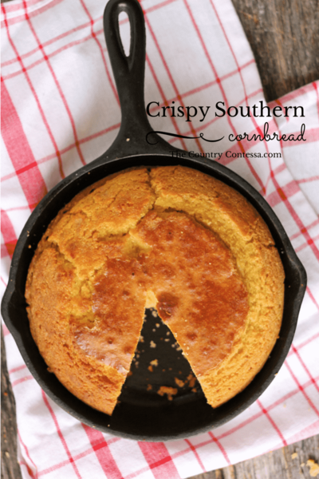

Back to Homepage
Southern Cornbread

Description
For those of you who love a no suger, crispy skillet cornbread, this recipe is spot on!
Ingredients
- 2 cups self rising cornmeal mix not just plain cornmeal
- 2 tablespoons vegetable oil
- 1/4 cup vegetable oil for the skillet
- 1 3/4 cups buttermilk
Instructions
- Preheat the oven to 400 degrees
- If you are using cast iron, place the 1/4 cup oil in the bottom of a 9″ skillet and place over high heat on your stovetop while you make the batter
- Pour the cornmeal into a bowl and add the oil, egg, and buttermilk
- Mix until combined and drop a small amount into your skillet
- If it sizzles immediately, go ahead and pour in your batter to within 1 inch of the top. If you want a thinner cornbread, just don’t pour in as much
- Transfer the skillet from the stove top to the hot oven
- Bake 25-30 minutes or until golden and set
Back to Homepage